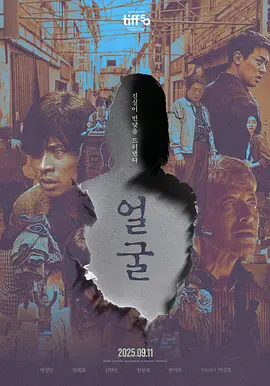

6.3
脸庞
The Ugly
2025
韩国
评分 6.3
导演:
延尚昊
演员:
朴正民 / 权海骁 / 申铉彬 / 林成宰 / 韩智贤
类型:
悬疑,惊悚
剧情简介
林东焕常年与失明的篆刻家父亲生活在偏僻的老屋里，日子静得能听见风吹过庭院的声音。父亲沉默寡言，手下的刀锋却从不犹豫，东焕习惯在一旁听着金石碰撞声中度过一天又一天。某个深夜，一通突兀的电话打破僵硬的日常——失踪四十年的母亲“回来了”，却以一副被发现的骸骨身份出现。这句话在他脑中盘旋，像是从深井里传来的回声，让人不寒而栗。他开始频频奔走，试图拼凑当年发生的真相。老邻居、昔日熟人、当年的目击者，没有人愿意多说，但每个人都留下同样一句评语——“她长得很丑。”这些语气各异的声音交织在一起，既像是回避，又像是警告。随着东焕深入调查，关于母亲的描述变得愈发模糊，她的模样似乎成了当地人共同守口如瓶的秘密。越是追问，他越能感受到潜藏在表象之下的敌意，那些被隐藏多年的细节逐渐露出冷硬的棱角。在不断探寻中，东焕不得不面对父亲的沉默与回避，两人之间紧绷的关系在压力下不断扭曲。他感到自己像被推向一张看不见的网中央，每走一步，都有某种难以言说的东西在身后收紧。阴影、传闻、未解的旧事交错成一股无形的力量，将他引向母亲逝去前的最后轨迹。当更多线索浮现，他意识到，这不仅是寻找真相的旅程，也是一次直面恐惧的过程，而那份恐惧既来自外界，也来自他始终不敢触碰的内心深处。